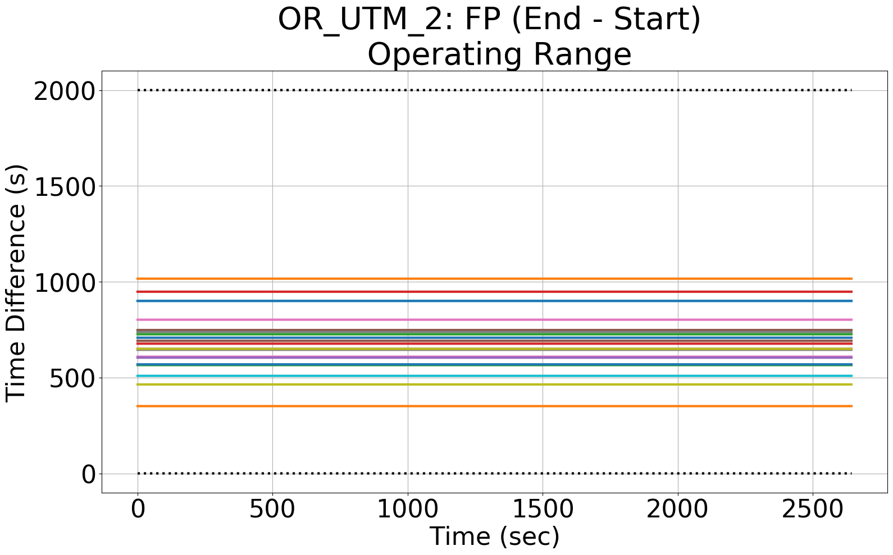
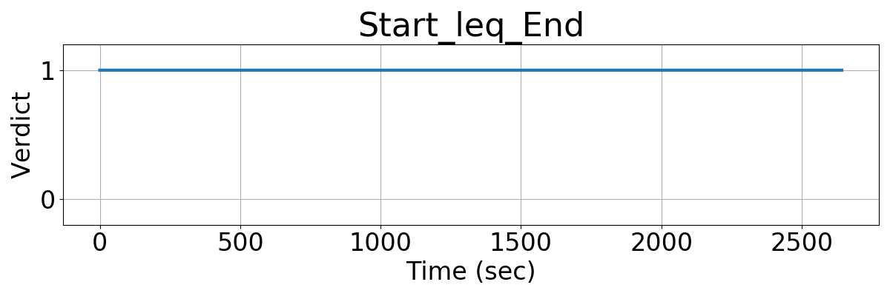
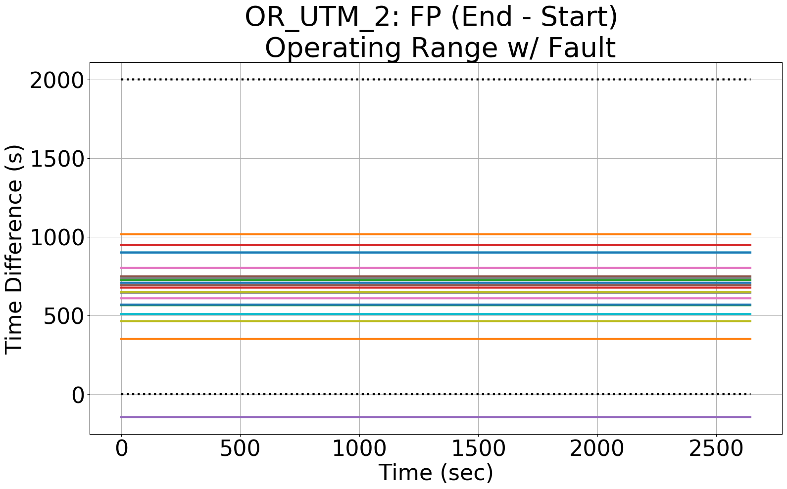
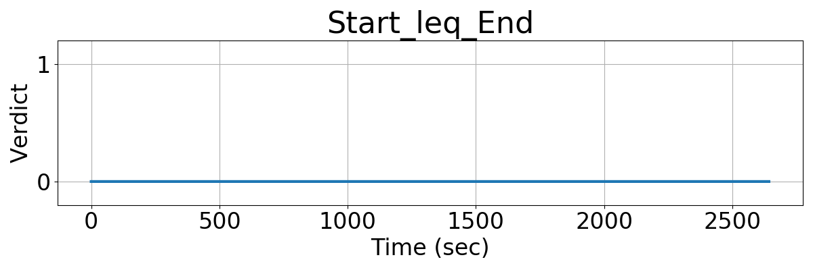

Integrating Runtime Verification into an
Automated UAS Traffic Management System
Matthew Cauwels, Abigail Hammer, Benjamin Hertz, Phillip H. Jones, Kristin Y. Rozier
This webpage contains supplementary specifications for "Integrating Runtime Verification into an
Automated UAS Traffic Management System" by M. Cauwels, A. Hammer, B. Hertz, P. H. Jones, and K. Y. Rozier
OR_UTM_2
Specification Description
The Start time of any flight plan must be less than the flight plan's End time
Signals Required
Start, End
Boolean Conversion of Signals to Atomic Inputs
Start_leq_End = 1;
for(i = 0; i < NumUAS; i++)
{
// if UAS i's Start is less than its End
// and both values are not "nan"
if((Start[i] > End[i]) && (Start[i] == Start[i]) && (End[i] == End[i]))
{
Start_leq_End = 0;
}
}MLTL Specification
Original: Start_leq_End
Fault Explanation
The user should not be able to say they landed before they took off
Additional Notes
Figures



